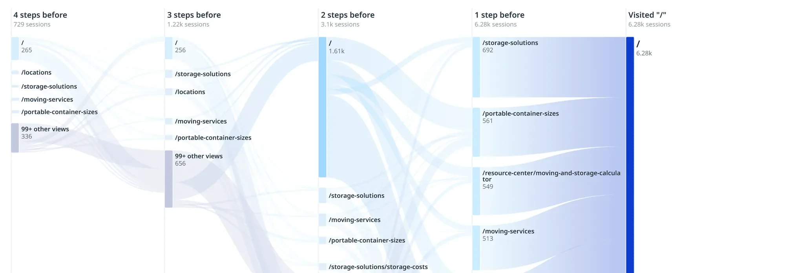
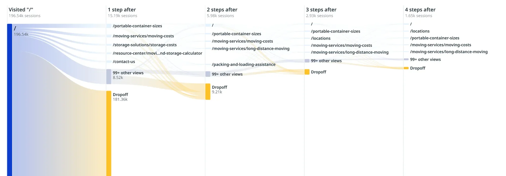
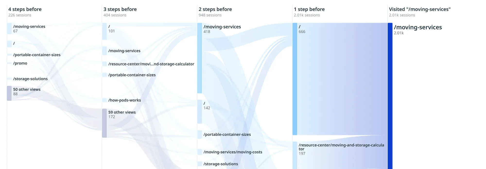
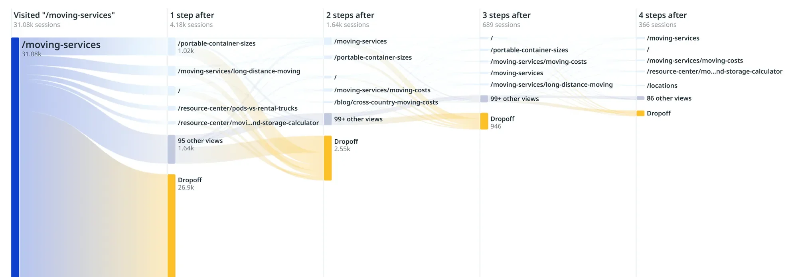
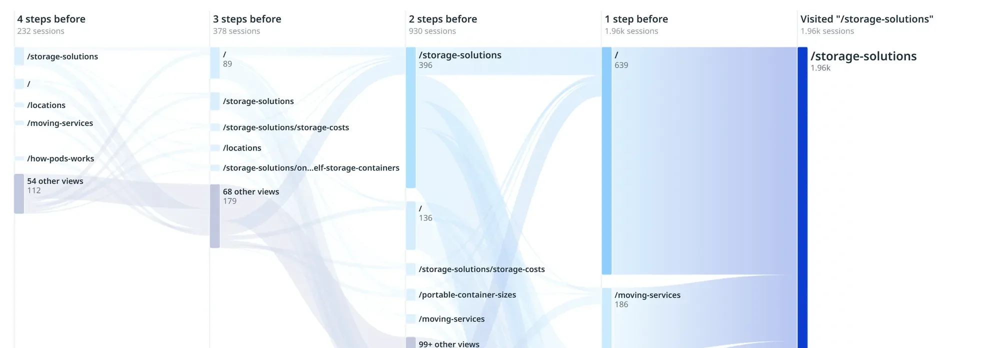
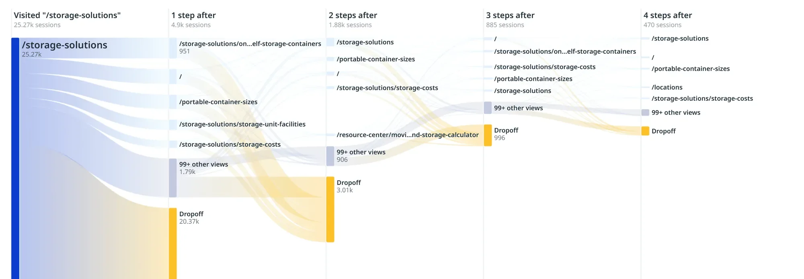
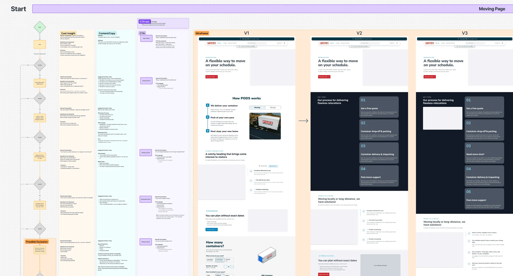

PODS · Research & strategy · Case study
- Customers kept leaving the page.
- Moving. Storage. Sizes. Costs. Then back again.
- Before anyone redesigned anything, I asked one question.
- Is that confusion, or confidence being built?

Pre‑Quote Strategy
How PODS customers build confidence before they start a quote.
- Role
- Senior UX Designer
- Scope
- Research & strategy
- Timeline
- 4 weeks · 2026
- Informed
- PODS.com navigation & page redesign
01 · The question
The question
- Q1Which pages are decision hubs, and which are dead ends?
- Q2Are customers bouncing from confusion, or validation?
- Q3How often do people compare Moving and Storage before deciding?
- Q4What do they need to know before they feel ready to get a quote?
02 · The evidence
Behavior shows where. Research explains why.
- 01IdentifyRank the highest‑volume quote‑driving pages to see where intent concentrates.
- 02MapTrace four steps before and after each one to find repeated patterns and shared hubs.
- 03SynthesizePair the paths with moderated interviews, using AI to speed synthesis and vetting every insight against the data.
02 · The evidence
Exhibit A · Quote clicks by page, one week
First, where does quote intent actually live?
- I ranked the pages that drove the most “Get a quote” clicks.
- The homepage led by far. Take it off the scale, and a tight cluster appears: services, the calculator, costs, sizes.
- A small set of pages carried the decision.
Exhibit B · Pathing, four steps before and after
- Then I mapped what people did before and after each of those pages.
- The same few pages kept showing up on both sides of the decision.
- People weren't moving through a funnel. They were looping.






03 · The reframe
The reframe
Illustrative journey
- Here's a typical path. On a dashboard, it looks like a problem.
- Back and forth. Bounce after bounce. Confused?
- Interviews told a different story. Every hop answered a question about fit, service, size, or price.
- The loops weren't friction. They were confidence being built.
04 · The why
What customers told us, and what they did.
Moderated interviews, synthesized with AI and vetted against behavioral data.
- 01 · Exploratory intentCustomers start quotes to get oriented, expecting to adjust details later.
- 02 · PricingVisible pricing signals raised confidence and cut early hesitation.
- 03 · Mental bundlingPeople think “Moving + Storage”, not in rigid product buckets.
- 04 · Familiar startsThey begin with the service they understand first, and expect to customize.
- 05 · Terminology frictionAmbiguous industry terms caused hesitation between pages.
- 06 · Validation loopsPage‑hopping was healthy: triangulating fit, cost, and logistics.
05 · The model
What must be true before someone clicks “Get a quote”.
High uncertaintyExploring under stress and fear of the wrong choice
- This works for my situationRemoves: choosing the wrong thing too early
- I understand how this worksRemoves: not knowing what happens next
- I'm not locking myself in yetRemoves: fear of commitment
- I understand what this will likely costRemoves: unclear total cost
- I can get help if I need itRemoves: going it alone
Confident enough to start a quoteThe threshold

The work · Moving page strategy
- Then I turned the model into pages that answer questions as the customer asks them.
- Each section maps to a moment in the decision: “Does this capture me?”
- Customer insight, then copy, then a CTA matched to how ready they feel.
- Every button says: when you're ready, here's the next safe step.
06 · The answer
Reframing the strategy
From
Hubs that anticipate the next question, instead of making people hunt for sizes and costs.Standalone pagesConnected systemsFrom
Pages that follow how people really think: needs, constraints, timing, uncertainty.Rigid taxonomiesGuided comparisonFrom
A homepage that routes high intent straight to the confidence it needs.Generic entry pointsIntelligent routingFrom
Keep the healthy loops. Make every transition faster and more intentional.Accidental bouncingFaster confidence
What shipped
Evidence the redesign could build on.
- Primary deliverablePre‑quote confidence modelThe framework guiding navigation and destination‑page decisions in the redesign.
- StructureNavigation modelAnswers at people's fingertips, instead of hide‑and‑seek content.
- ProofNav & page prototypeAn early prototype of the core flow, for alignment.
- ContentPage & content strategyData over organizational opinion, for clarity and simplicity.
Customers don't fail to convert.
They pause until they feel safe.
Want the full findings, and what I'd test next?
 Next case
PODS Design System
Next case
PODS Design System